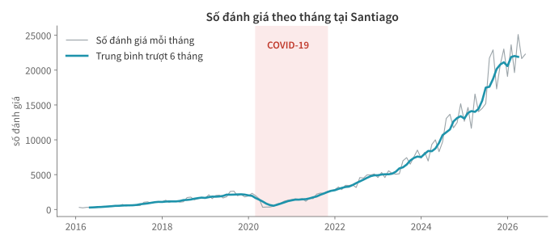
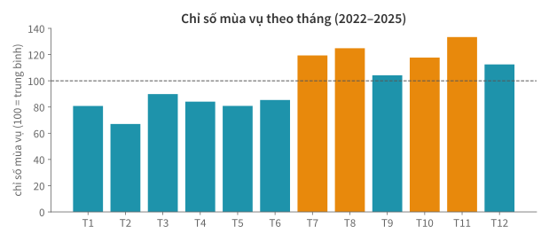

Học kì 1, năm học 2026–2027
Viện Trí tuệ nhân tạo, Trường ĐH Công nghệ, ĐHQGHN
Kiểu ngày giờ, tổng hợp theo kỳ, cửa sổ trượt và so sánh cùng kỳ.
.str và biểu thức chính quy: biến cột chuỗi thành cột tín hiệu.Dữ liệu Santiago có 690.112 bản ghi đánh giá, mỗi dòng kèm một ngày ghi nhận.
Chuỗi "2026-06-29" phải được đổi kiểu trước khi tính toán.
rv_raw = pd.read_csv("reviews.csv", parse_dates=["date"])
rv = rv_raw.loc[rv_raw["date"] <= "2026-06-29"].copy()
rv.dtypes
listing_id int64
date datetime64[us]
Khi cột có kiểu datetime64, pandas có thể tính khoảng cách,
gộp theo tháng và trích xuất các thành phần của ngày.
pd.Series({
"MM/DD/YYYY": pd.to_datetime("03/07/2026", format="%m/%d/%Y"),
"DD/MM/YYYY": pd.to_datetime("03/07/2026", format="%d/%m/%Y"),
})
MM/DD/YYYY 2026-03-07
DD/MM/YYYY 2026-07-03
format; khi ghi file, ưu tiên ISO YYYY-MM-DD.
rv["date"].dt.year.value_counts().sort_index().tail(3)
2024 131267
2025 211432
2026 128459
Một cột kiểu ngày giờ (datetime) cung cấp nhiều thuộc tính:
.dt.year / .month / .dayofweek / .quarter / .date…
Các thuộc tính này có thể dùng để lọc hoặc gom nhóm.
snapshot = pd.Timestamp("2026-06-29")
first = listings["first_review"].where(listings["first_review"] <= snapshot)
so_nam = (snapshot - first).dt.days / 365.25
so_nam.describe().round(1).loc[["50%", "max"]]
50% 1.5
max 15.6
Trừ hai giá trị ngày giờ tạo ra một khoảng thời gian (Timedelta). Trung vị số năm
kể từ đánh giá đầu tiên là 1,5 năm; đây là một đặc trưng được tạo từ hai mốc thời gian.
Đặt thời gian làm chỉ mục để cắt lát và tổng hợp theo lịch.
r = rv.set_index("date").sort_index()
pd.Series({
"năm 2026": len(r.loc["2026"]),
"tháng 3/2026": len(r.loc["2026-03"]),
})
năm 2026 128459
tháng 3/2026 25108
Với chỉ mục thời gian (DatetimeIndex), .loc["2026-03"] chọn mọi dòng
trong tháng 3/2026. Đây là cách cắt lát thời gian bằng một phần chuỗi ngày.
theo_thang = r.resample("ME").size() # ME = cuối tháng
theo_thang.tail(3)
date
2026-04-30 21656
2026-05-31 22296
2026-06-30 16112
"ME" tháng, "W" tuần, "QE" quý, "YE" năm — đây là phép gộp nhóm theo các khoảng thời gian trên lịch.
rv_raw.loc[rv_raw["date"] > "2026-06-29", "date"].value_counts()
date
2026-06-30 155
2026-07-01 49
Mốc chụp dữ liệu là 29/06, nhưng file gốc vẫn có 204 dòng đề ngày sau đó —
slide đầu bài đã lọc chúng khi tạo rv.
Sau khi loại các ngày này, tháng 6 vẫn chưa trọn. Tháng 5/2026 là tháng đầy đủ cuối cùng. Cần loại kỳ chưa trọn trước khi so sánh hoặc vẽ biểu đồ.
thang_day_du = theo_thang.loc[:"2026-05-31"]
muot = thang_day_du.rolling(6, center=True).mean()
Mỗi điểm là trung bình của một cửa sổ 6 tháng. Dao động ngắn hạn giảm bớt, giúp quan sát xu hướng dài hơn.
s = pd.Series([10, 12, 15], index=["T1", "T2", "T3"])
s.shift(1) # mỗi ô lấy giá trị của kỳ liền trước
T1 NaN
T2 10.0
T3 12.0
shift(1) đẩy mỗi giá trị xuống một dòng, sinh NaN ở đầu.
Nhờ đó s / s.shift(1) so mỗi tháng với tháng trước,
còn shift(12) so với cùng tháng năm trước.
(thang_day_du.pct_change() * 100).loc["2026-05-31"].round(1)
3.0
Phương thức tính tỷ lệ thay đổi pct_change() tương đương
x / x.shift(1) - 1.
Tháng 5/2026 tăng 3% so với tháng 4/2026.
yoy = (thang_day_du / thang_day_du.shift(12) - 1) * 100
yoy.loc["2026-05-31"].round(1)
53.7
Áp dụng các kỹ thuật vừa học trên dữ liệu đánh giá thực tế.

tron = r.loc["2022":"2025"] # chỉ các năm trọn
thang = tron.groupby(tron.index.month).size()
chi_so = thang / thang.mean() * 100 # 100 = tháng trung bình
chi_so.round().astype(int).tolist()
[81, 67, 90, 84, 81, 85, 119, 125, 104, 118, 133, 112]
Đếm số đánh giá theo tháng-lịch rồi chia cho mức trung bình 12 tháng. Chỉ số 100 = tháng trung bình; T11 = 133 tức cao hơn 33%.

Khi so sánh các thành phố, cần dùng cùng phạm vi thời gian và loại các kỳ chưa trọn.
to_datetime/parse_dates trước tiên; cẩn thận dd/mm;
ISO khi ghi file."2026-03", tổng hợp theo kỳ bằng
resample, làm mượt bằng cửa sổ trượt rolling.pct_change cho kỳ liền trước và shift(12)
cho cùng kỳ năm trước.resample) hoặc cửa sổ trượt
(rolling) từ một yêu cầu rõ ràng,
chẳng hạn gộp theo tuần rồi tính trung bình trượt.
len(r.loc["2026-03"]) đối chiếu với
con số AI đưa.